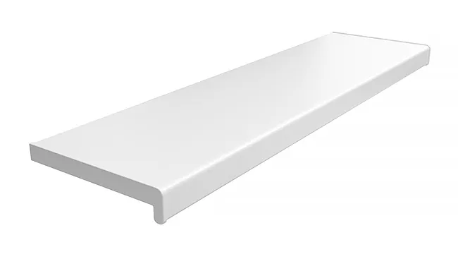

Opis produktu
Parapety wykonane z PVC od wielu lat pokrywają zapotrzebowanie rynków budowlanych na całym świecie. Są przykładem zachowania idealnego balansu między ceną a jakością produktu. Właściwości materiału gwarantują odporność na wilgoć i temperaturę, a przekrój komorowy nadaje sztywność konstrukcji oraz gwarantuje stabilność parapetu. Parapety powlekane są folią wysokiej jakości, co zwiększa ich odporność na zarysowania oraz na działanie promieni słonecznych. Gładka powierzchnia okleiny ułatwia pielęgnację i zapobiega ich trwałym zabrudzeniom. Standardową linię parapetów PVC charakteryzuje klasyczna prostota dzięki czemu produkt idealnie sprawdzi się zarówno w nowoczesnych, surowych wnętrzach, jak i w pomieszczeniach o dużej ilości dominujących szczegółów.
Parametry techniczne i charakterystyka
- ✓szerokości: od 15 do 40 cm (co 5 cm), 50 cm, biały i marmur dodatkowo w szerokości 60 cm
- ✓długość maksymalna – 600 cm
- ✓grubość parapetu – 2 cm
- ✓grubość ścianki – 1,3 mm
- ✓możliwość docięcia parapetu na szerokość
- ✓każdy parapet wykonywany jest pod indywidualny wymiar podany przez klienta
- ✓zabezpieczenie folią ochronną
Kolorystyka

- Biały
- Marmur
- Srebrny
- Dąb wiejski
- Dąb naturalny
- Winchester
- Złoty dąb
- Orzech
- Antracyt
- Czarny mat